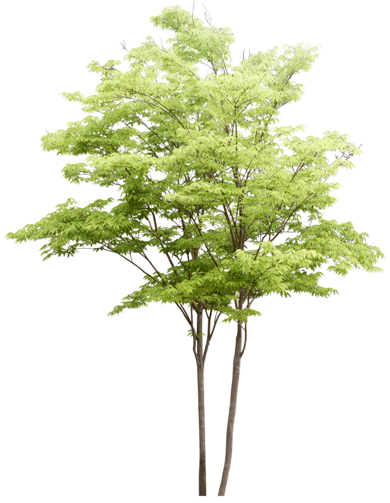
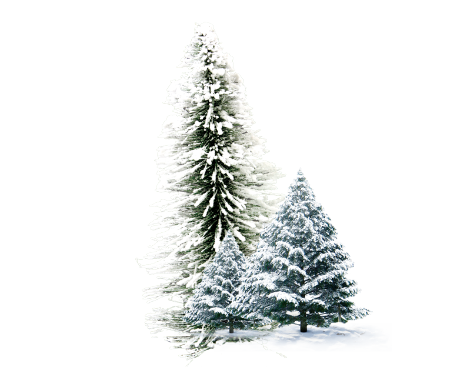
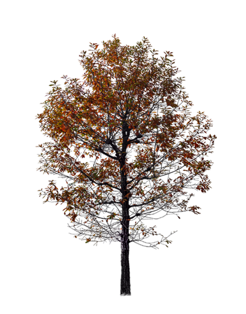
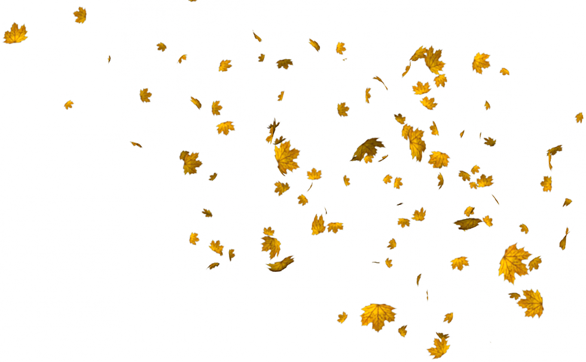

Festive Spring has arrived,
The birds salute it with their happy song.
And the brooks, caressed by little Zephyrs,
Flow with a sweet murmur.
The sky is covered with a black mantle,
And thunder, and lightning, announce a storm.
When they are silent, the birds
Return to sing their lovely song.
II. Largo e pianissimo sempre--
And in the meadow, rich with flowers,
To the sweet murmur of leaves and plants,
The goatherd sleeps, with his faithful dog at his side.
III. Danza pastorale. Allegro--
To the festive sound of pastoral bagpipes,
Dance nymphs and shepherds,
At Spring's brilliant appearance.


Under the heat of the burning summer sun,
Languish man and flock; the pine is parched.
The cuckoo finds its voice, and suddenly,
The turtledove and goldfinch sing.
A gentle breeze blows,
But suddenly, the north wind appears.
The shepherd weeps because, overhead,
Lies the fierce storm, and his destiny.
II. Adagio; Presto--
His tired limbs are deprived of rest
By his fear of lightning and fierce thunder,
And by furious swarms of flies and hornets.
III. Presto--
Alas, how just are his fears,
Thunder and lightening fill the Heavens, and the hail
Slices the tops of the corn and other grain.

Frozen and trembling in the icy snow,
In the severe blast of the horrible wind,
As we run, we constantly stamp our feet,
And our teeth chatter in the cold.
II. Largo--
To spend happy and quiet days near the fire,
While, outside, the rain soaks hundreds.
III. Allegro--
We walk on the ice with slow steps,
And tread carefully, for fear of falling.
Symphony, If we go quickly, we slip and fall to the ground.
Again we run on the ice,
Until it cracks and opens.
We hear, from closed doors,
Sirocco, Boreas, and all the winds in battle.
This is winter, but it brings joy.


The peasants celebrate with dance and song,
The joy of a rich harvest.
And, full of Bacchus's liquor,
They finish their celebration with sleep.
II. Adagio molto--
Each peasant ceases his dance and song.
The mild air gives pleasure,
And the season invites many
To enjoy a sweet slumber.
III. Allegro--
The hunters, at the break of dawn, go to the hunt.
With horns, guns, and dogs they are off,
The beast flees, and they follow its trail.
Already fearful and exhausted by the great noise,
Of guns and dogs, and wounded,
The exhausted beast tries to flee, but dies.